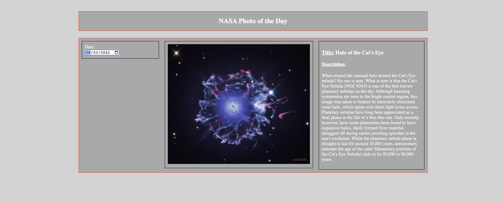
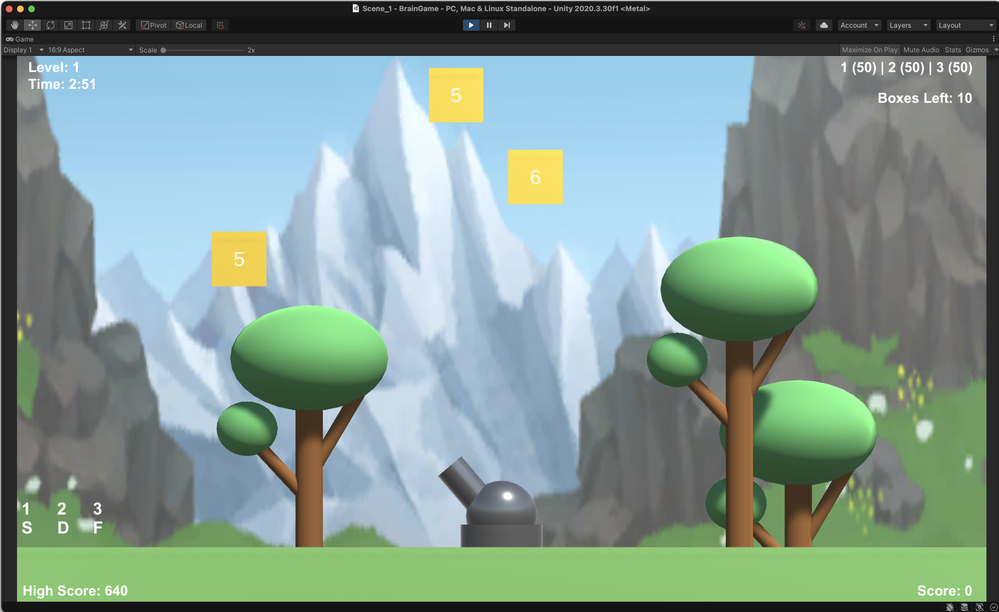

Project Page
Computing Sites Technician
I’ve been working as a Computing Sites Technician since August of 2021. This is a position with the IT department at the University of Missouri. I do all sorts of IT work at this job, mostly supporting the computers and printers that students use around campus. These labs total at over 1,000 machines, and over 50 enterprise-grade printers. I also diagnose and resolve computer hardware and software-related issues using Cherwell’s ticketing system. Additionally, I’ve helped setup and image hundreds of new Windows/macOS machines. The job never quite gives me the same thing each day, and I feel a great deal of pride helping the students at this educational institution.

This has been a great first job in IT. I’ve learned a whole bunch about what goes into supporting many machines, as well as communicating with and solving the problems of students/staff across campus. I’ve really enjoyed this position, and I hope my next IT venture will be as successful as this one.
NASA Photo of the Day + Opportunity Rover Website
This is a website I made for one of my web development classes last year. It allows the user to get pictures from NASA. You can get pictures from the Opportunity Rover or NASA’s Photo of the Day. You can enter a Martian SOL and select a camera and the site will display a carousel of images that NASA’s API returns. The Photo of the Day API allows you to get an image that NASA posts for that day. The site uses HTML, CSS, JavaScript, JQuery, and AJAX. It’s simple by modern web dev standards, but it was challenging to write the site from scratch. I think it’s a pretty neat accomplishment!
Reflecting on this assignment, there was quite a bit of frustration when writing this site. I remember having a hard time with the API calls. Making sure the formatting was just right took some getting used to at the time. Implementing the carousel was also difficult, as the CSS styling was a little finicky in getting it to look the way I wanted.
Brain Game
This is a Unity video game that I developed for my Game Design class. It’s a replica of a cognitive training game. You control a cannon and shoot cannonballs at boxes that are falling down the screen. The cannonballs have values of 1-3. The boxes have all sorts of values. The goal is to shoot the box with appropriate values until its value equals zero. You’ll lose points if the box falls to the ground or if its value goes below zero (i.e. you shoot a box with a value of 2 with a cannonball with a value of 3). This was another interesting project, as there was a lot to look at here from a design perspective. Getting the box’s/cannonball’s value to stick to it as it went across the screen, perfecting the turning radius of the cannon, designing background assets, etc. It only took a couple days to get it working well enough for the class’s standards, but it was still a decent project for a basic game design class.
Lots to learn from here. It’s an intriguing process to make a game. Unity’s game engine makes that process a lot easier, but it’s still interesting nonetheless. Troubleshooting can be challenging when there’s so many moving parts. It was fun to design the assets, adjust the physics, and other things like that. I’m not sure if I would enjoy it for a living since it’s pretty demanding, but it’s a great way to showcase programming skills and creativity.